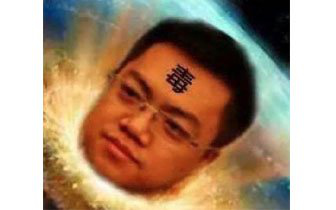
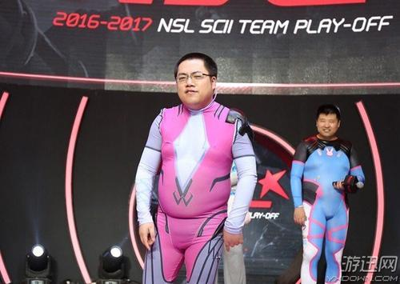
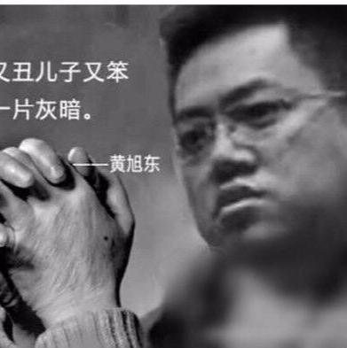

民用因果律武器黄大仙
目录：
个人简介
人物相关
逸闻
毒奶
相关图片
个人简介
黄旭东，网名小色，游戏解说，曾为WCG2007至2010《星际争霸》项目中文解说，曾经担任电子游戏视频平台NeoTv制片人，现在已脱离NeoTV，和F91（孙一峰），法人（周宁）一起创建了SCBoy公司。目前专项解说游戏星际争霸2。
人物相关
-
2004年，黄旭东在第一届全国电子竞技运动会中担任记者。后去到竞星网制作《小色教你打星际》、《星际之夜》等节目。
-
2006年，CEG广州站举行，由于现场缺一个解说，工作人员让黄旭东顶场，因此黄旭东进行他第一次现场解说。由于效果非常好，他被邀请在成都站、西安站进行解说。
- 2007年，加入NeoTV，成为WCG的解说。
-
2008年，有水友星际争霸论坛“8DA”上发帖称星际选手章春雷在赛前和选手“大师”（隶属于PLU）一起训练了一个月导致战绩不佳（章春雷在WCG中国区分站赛上被淘汰），黄旭东在该帖子下面跟帖应和。但该帖中一个用户的IP是来源于NeoTV（该用户发过不少诋毁PLU和GAMESTV的帖子）被网友曝光，黄旭东被认为是该用户，并因此卷入数次网络骂战。2008年11月12日，黄旭东在博客上宣布退出8DA论坛。
- 2010年，在STX“中韩大师对抗赛”后，黄旭东宣布退出星际争霸一。
-
2011年底，黄旭东和孙一峰、MsJoy、周宁组成星际争霸2解说团体“星际老男孩”。
- 2017年9月，与魔音糯米在魔音糯米有无使用外挂的方面产生纠纷。
- 2019年，黄旭东离开NeoTV，成立Scboy Gaming公司，并建立相关论坛。
逸闻
在解说中，他会以比赛状况做出预测，但被他认为有优势或者被他夸奖的一方经常会出现失误且输掉比赛，因此拥有“电竞毒奶”、“毒奶黄旭东”之称，其预测常和结果相反的情况甚至扩展到其他领域，也因此出名。
黄旭东具有极强的毒奶功力，只要被他看好的，基本会出事，而且领域十分广泛，小到星际足球，大到天灾人祸，战绩惊人。如果奇迹有颜色，那一定是毒奶色！
毒奶（2020.1.1至今）
-
1月17日，黄老仙连续感谢了4个“祝碧蓝航线越来越好”的飞机，随后感谢了同祝福的一个火箭，第二天直播又感谢了一个相同的飞机。什么仇什么怨
- 毒奶六连，瓜游药丸
-
1月24日，B站拜年祭节目中碧蓝航线人气角色企业与克利夫兰在制作组安排下遭虐杀惨死，导致瓜游玩家集体炎上。算是挡了一波奶
-
2月27日，当日下午碧蓝航线新活动开启导致部分安卓服务器崩溃，晚上八点临时维护结束但游戏全部回档。还是没挡住
-
1月18日，孙一峰玩港诡实录时，遇见远方红衣女鬼一只，茫然无措时。黄旭东吐槽着：“鬼又不会突然出现在你面前的，那么远。”
-
话音未落，那女鬼突然间窜满整个屏幕，惊得孙一峰大呼一声“哇！”并捂眼良久。
-
2月17日，托特纳姆热刺在客场3：2战胜阿斯顿维拉，孙兴慜打入制胜一球，黄旭东夸赞其为“韩国小武磊”“有点风采”。
-
2月18日，天空体育报道，孙兴慜右臂骨折，赛季报销。武磊一个月后患上肺炎
-
2月19日，黄旭东发微博称在欧冠赛场上独中两元的哈兰德（19岁）“火不了太久”。多特蒙德笑嘻嘻
-
2月24日，IEM卡托维茨站，黄旭东预言“IEM冠军就点这四个：Reynor、Dark、Serral，再加个Maru”随后被封杀，结果四人无一进入决赛报复性操纵比赛，史称IEM四君子。特别是在3月1日，Serral3:1击败吕布后，黄旭东发微博称“我话放这里了下，决赛不是maru，谁来都没戏，maru还有三成胜算，今年的serral已到化3”。
-
当晚半决赛中Zest王者归来3:2淘汰Serral，赛后Serral发推表示自己比赛时脑子一片空白大脑冒奶。
-
3月12日，欧冠淘汰赛第二回合，利物浦对阵马竞，黄旭东认为利物浦可以翻盘淘汰马竞。
- 结果马竞通过加时赛3-2击败利物浦晋级八强。
-
3月18日，在与孙一峰和Sed老师三排COD的时候，黄旭东在监狱脸滚键盘惊险逃脱被孙一峰嘲笑，随后黄旭东回怼：“md你不要管，老子活下来了”
-
话音未落，黄哥重部署落地踩雷，F91与MacSed大笑不能自已典狱长疯起来连自己都奶
-
3月20日，IntoTheAlphaX线上赛，BreaKIngGG对阵Hurricane的决胜局中，老仙看到汉堡哥爆出十几条飞龙，果断表示“我大胆预测一下Hurricane会输”。
-
随后双方决战中老仙又多次念出咒语“飞龙骑脸”，结果汉堡哥的虫群被对方顶穿输掉比赛，随后老仙强行解释说汉堡哥换家也能赢的飞龙骑脸最新DLC
-
3月29日，2020年GSL超级赛半决赛中，Maru对Solar的第二局中，Solar开局找到了Maru的野2兵营并击杀了农民，Maru局势大劣。勇敢的解说敢下判断大哥宣布Solar已经赢了。
-
随后Solar如大哥所言般出了蟑螂一波，怯弱的解说现在才敢下判断黄旭东也随后宣布Solar赢了“赢了赢了赢了，终于赢了”，Solar的第一波攻势开始了......“我tm不信maru防得住。”“去死吧maru，你🐴的这你🐴防给我看？我tm还不信了今天。”Solar频频中奶，随后maru用农民围死了2个火蟑螂1个蟑螂，导弹车甩死余下的1个再补一个成功防住。
-
一波未平一波又起，第二波攻势中Solar领先Maru50多个战斗人口，黄旭东就不信maru能防住，自言：“这波要en死了。”“这么多蟑螂，🐴你操作再好，这盘我不信了。”“这盘（波）防不住了，上一盘（波）还有操作空间，这盘（波）没有操作空间了！”“他已经守得很好了，但没用。”来人！给公子灌奶！结果Maru用惊为天人的拉扯Solar西瓜上身砸火失误成功击退Solar的攻势。
-
在局势已经被Maru翻回来的情况下大哥问老仙这要怎么办？老仙说：“哎呀，让沸羊羊（Dark）来教你怎么打ZVT好吧。”沸羊羊：我tm谢谢你啊最后Maru在决赛中跟沸羊羊打满7局以4：3的比分胜利。
-
4月1日，接班人约战孙一峰，双方各赢一局后，黄旭东下判断称赞接班人细节做得好，并告诉孙一峰“你赢不了他，你绝对赢不了他”，孙一峰也趁机附和骗奶。
-
结果随后的对战中接班人完全失去章法，连续被孙一峰轻松打爆，孙一峰还不得不故意放水让分差不那么难看。
以上内容引自萌娘百科(https://zh.moegirl.org)
相关图片



回到顶部